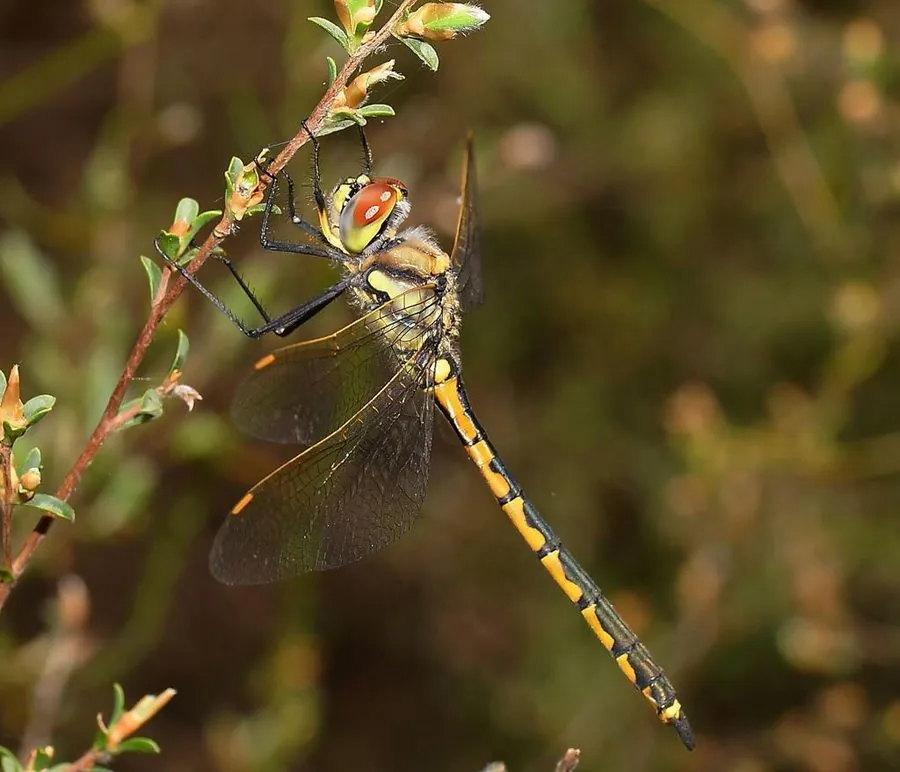

昆虫 · 动物界
绿宝石蜻 Hemicordulia tau

复眼碧绿、腹部细长的蜻蜓，停歇时习惯倒挂在枝梢上，常在水塘和湖泊上空缓慢巡飞，是澳洲常见的宝石蜻。
- 分类
- 门节肢动物门纲昆虫纲目蜻蜓目科伪蜻科属半伪蜻属
- 栖息环境
- 池塘、湖泊、水沟和缓流河流附近，成虫多在水面上空巡飞
- 地理分布
- 澳大利亚东部和南部
- 保护级别
- 暂无评估
物种志
绿宝石蜻成虫体长 40–45 mm，后翅长约 30 mm。复眼大而呈碧绿色，在头顶相接；胸部和腹部以黑色为底，缀有黄绿色或黄褐色的斑纹，腹部细长，末端略微膨大。翅透明，翅痣深褐色。
绿宝石蜻分布于澳大利亚东部和南部，常见于池塘、湖泊、水沟和流速缓慢的河流附近。成虫喜欢在水面上方来回巡飞，姿态轻盈，常悬停片刻再突然加速捕捉蚊虫；停歇时多倒挂在枝梢或芦苇上，与其他蜻蜓多平伏停歇的习惯不同。幼虫生活在静水或缓流水体的底层泥沙中，捕食水生昆虫和蝌蚪。成虫在暖季羽化，寿命约数周至两三个月。这种蜻蜓在当地十分常见，尚未被列入受威胁物种，其种群主要受水体污染和湿地减少的影响。
形态与习性
- 食性捕食蚊、蠓等小型飞行昆虫
- 体长40–45 mm，后翅约 30 mm
- 复眼大而碧绿，在头顶相接
- 停歇习惯倒挂在枝梢或芦苇上
- 幼虫生活在静水底层泥沙中，捕食水生昆虫
- 寿命成虫约数周至两三个月
趣味知识
- 绿宝石蜻停歇时喜欢倒挂，这在蜻蜓中并不常见。
- 它常在水面上方悬停，再突然加速扑向蚊虫。
- 幼虫在水底泥沙中埋伏，靠捕食水生昆虫长大。